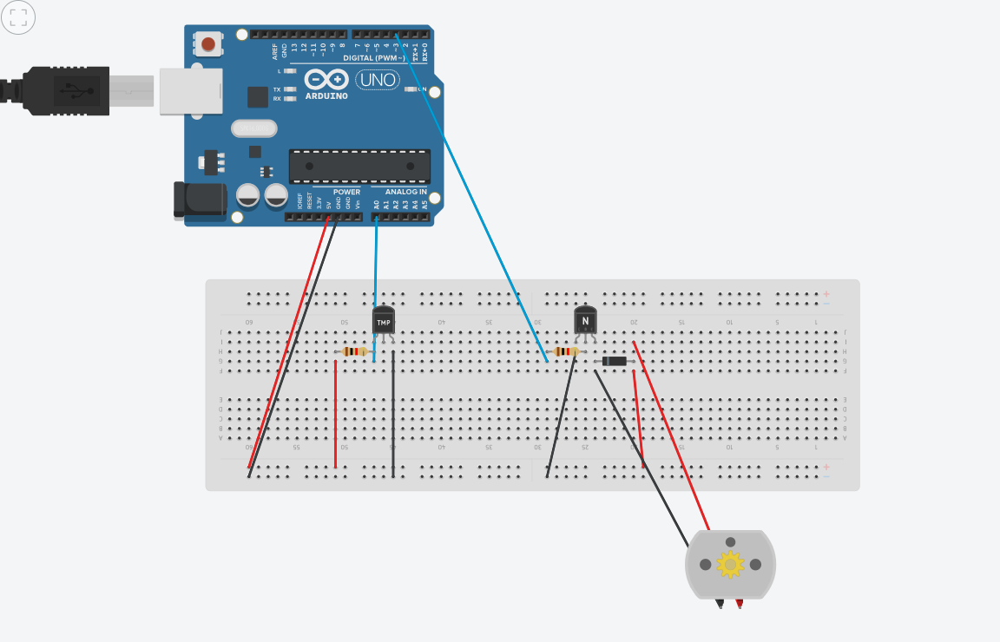
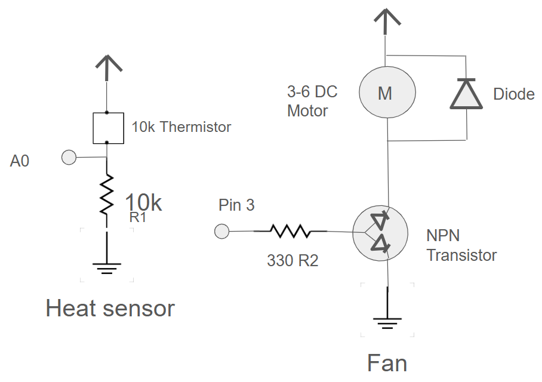
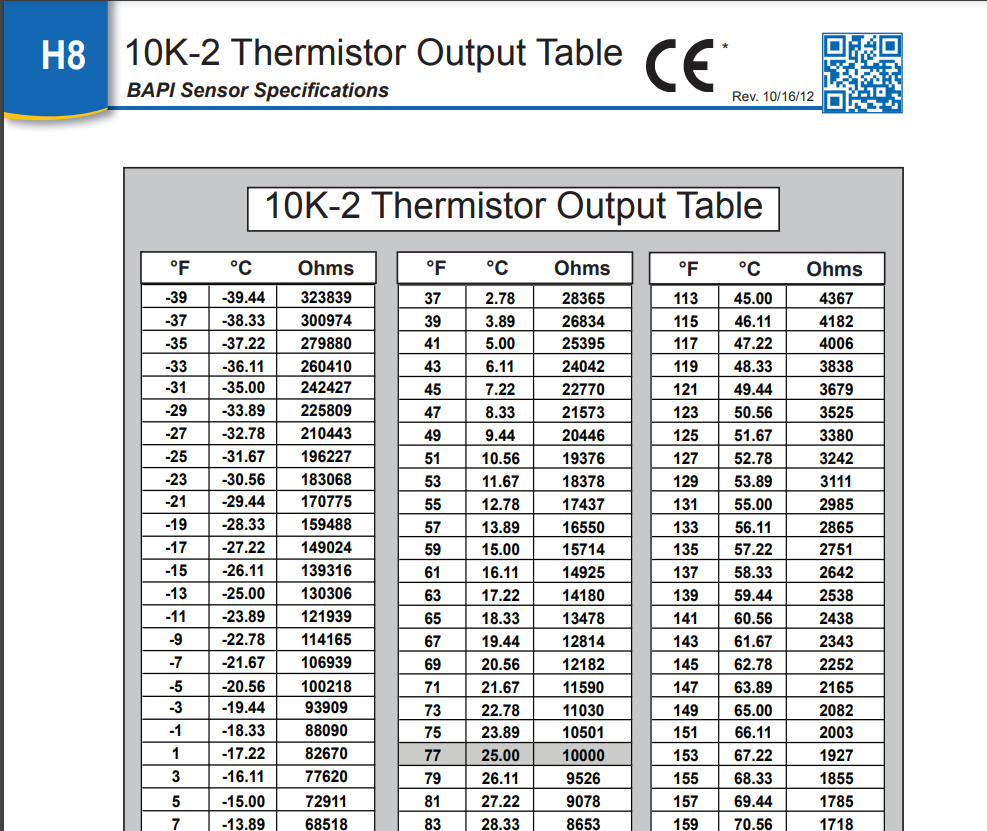
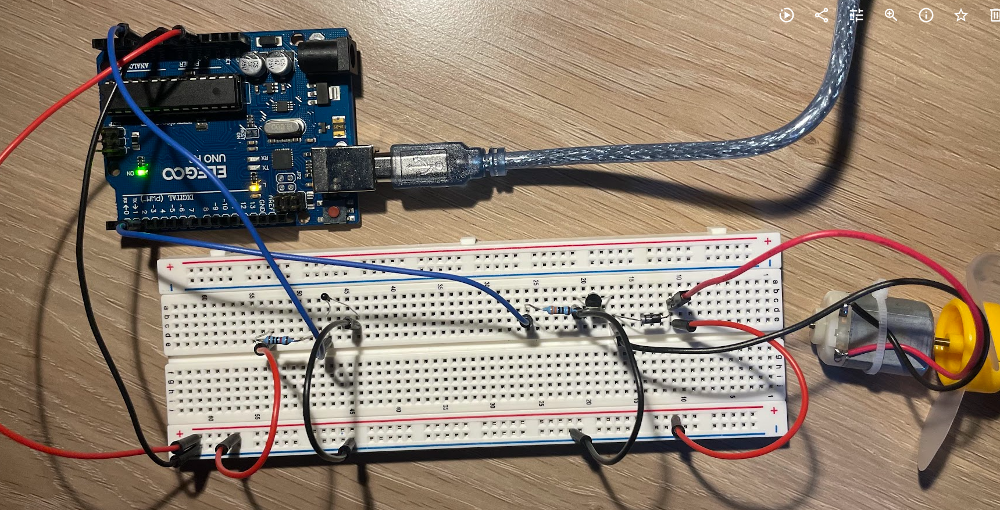
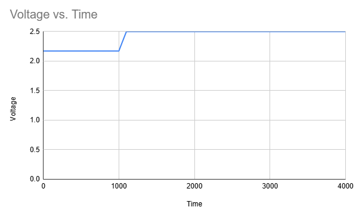

Here is all the documentation for assignment 3! InputOutput!
Here is a picture of the schematic used to make the circuit.
 Note: TinkerCAD did not have a thermistor, a heat sensor was used, please ignore the 3rd leg.
A 10kΩ resistor was used for the thermistor because the resistor used on a resistance divider should be the same as the resistance of the divider. If we want 2.5V (to power the fan at 10KΩ or 26 degrees Celsius)= 5V * R2/(R2 + 10kΩ)
Solving 2.5V = 5v * R2/(R2 + 10KΩ) is then
1/2 = R2 /(R2 +10kΩ)
2R2 = R2 + 10kΩ
R2 = 10k So a 10kΩ should be used.
A 330Ω resistor was used for the fan. If V = I * R and R = V / I and V = 5v - 1.4v (average for NPN) / 0.01 A = 360Ω
The value read on the thermistor will vary based on the temperature of the room. Since it generally reads in Celsius we will calculate in that unit. At higher temperatures the resistance decreases, allowing more voltage to pass through. Based on the datasheet, we know that at 25 C the resistor emits 10KΩ of resistance. This information is based on BAPI 10k-2 Thermistor Output Table.
At the voltage divider we may read changes in resistance of between 28136Ω and 5697Ω based on the table. As resistance decreases, the voltage increases.
Here is a picture of the circuit used in InputOutput!
Here is a GIF of InputOutput! in action. A hair dryer was used to increase the temperature rapidly, not to turn the fan.

Here is the code used for InoutOutput!
//A3 InputOutput!
// This code turns a fan off or on based on the temperature reading.
// Sets pin A0 to be called "tempPin"
int tempPin = A0;
// Sets pin 3 to be called "fanPin"
int fanPin = 3;
// Creates an arbitary value to act as T2 in the beta equation. 25 degrees in Celsius
int T2 = 25;
// Resistance of the thermistor 10,000 Ohms, will act as R1 in the beta equation
int R1 = 10000;
// Sets beta of the beta equation to be 3950.0 This value is derived from an average of beta readings at arbitary celsius temps.
float beta = 3950.0;
// Initalizes tempRead variable
int tempRead = 0;
// Initalizes voltage out (vOut) variable as a floating point
float vOut = 0.0;
// Initializes thermResistor variable as a floating point
float thermResistor = 0.0;
// Initializes kelvin to celsius to faherenheit temp as a floating point for greater accuracy
float finalTemp = 0.0;
// Initalizes speedMap variable
int speedmap = 0;
// Initalizes fanSpeed variable
int fanSpeed = 0;
// Sets up pins
void setup() {
// Sends serial signal in serial monitor to 9600 baud
Serial.begin(9600);
// tempPin (A0) will be the input
pinMode(tempPin, INPUT);
// fanPin (3) will be the output
pinMode(fanPin, OUTPUT);
// fanPin will be off at resting
digitalWrite(fanPin, LOW);
}
// loop to convert readings from thermistor into temperature to turn on the fan to a mapped speed
void loop() {
// Sets tempRead variable as a reading from the tempPin, value is a long string of numbers
tempRead = analogRead(tempPin);
// tempRead is converted to voltage using the resistance divider equation vOut = vIn * (R2 / (R1 + R2)) 1023.0 is derived from the 10 bit max resistance
vOut = 5.0 * (tempRead / 1023.0);
// Now the thermistor resistance can be calculated using voltage divider formula again vOut = vIn * (R2/(R1+R2)) converted to R2 = (vOut * R1) / (vIn - vOut)
thermResistor = (vOut * R1) / (5.0 - vOut) ;
// Calculate temperature in Kelvin to be converted to Celsius to convert to Fahrenheit
// Beta equation: beta = ln(R1/R2)/((1/T1)+(1/T2)) converted to T2 = 1/(log(R2/R1) * (1/T1))
// T1 also needs to be converted to Kelvin for the equation (add 273.15), then converted back to C to convert to F F = C * (9/5) + 32
finalTemp = ((1.0 / ((log(thermResistor / R1) / beta) + (1.0 / (T2 + 273.15))) - 273.15) * 9.0 / 5.0) + 32;
// Prints "Temperature: " to the serial monitor for tracking
Serial.print("Temperature: ");
// Prints the finalTemp from the beta equation into the serial monitor
Serial.print(finalTemp);
// Prints F for fahrenheit
Serial.println(" F");
// if statement for if the temperature exceeds 80 degrees Fahrenheit the following loop will run
if (finalTemp > 80) {
// Uses map to set a range of 10 tp 100 F and sets equidistance markers for the fan speed between 0 and 255
speedmap = map(finalTemp, 10, 100, 0, 255);
// Constrains the fan speed to 255 to prevent burnout
fanSpeed = constrain(speedmap, 0, 255);
// Writes the mapped and contrained fan speed to the fanPin (3)
analogWrite(fanPin, fanSpeed);
// Prints "Fan On Speed: " to the serial monitor when the fan is on
Serial.print("Fan on Speed: ");
// Prints the fan speed to the serial monitor
Serial.print(fanSpeed);
// end of if loop: if the temperature is under 80 degrees then the fan will remain off
} else {
// Turns fan off if temperature is under 80 degrees
digitalWrite(fanPin, LOW);
// Prints the "Fan off" to the serial monitor
Serial.println("Fan off");
}
// Delays the reading by 1 second
delay(1000);
}
Additional Questions
Question 1:In your voltage divider, can the variable resistor be either R1 or R2 or does it need to be one or the other? Justify your answer with example calculations.
In a voltage divider R2 must be the variable resistance. If the equation is Vout = Vin * (R2/(R1 + R2)) we can make some sample calculations to prove this.
R2 as fixed: R1 varies = 20kΩ and 30kΩ R2 = 10kΩ
Vout = 5v * (10kΩ/(20kΩ + 10kΩ)) = 1.66V
Vout = 5v * (10kΩ/30kΩ + 10kΩ) = 1.25V
R2 as variable: R1 = 10kΩ and R2 = 20kΩ and 30kΩ
Vout = 5v * (20kΩ/(10kΩ+20kΩ)) = 3.33V
Vout = 5v * (30k/(10kΩ+30kΩ)) = 3.75V
As you can see these values are not the same which implies that the variables are not interchangable.
Question 2: Draw a graph where the x-axis is time and the y-axis is voltage. Plot the voltage at V-measure of your voltage divider of your shared gif.

The fan on my circuit turns on at 80 degrees Fahenheit which is about 26 degrees Celsius. According to the beta equation and datasheets the base resistance of a thermistor at 25 Celsius is 10k Omhs.
We can use the resistance divider equation to find the voltage using our known information. Vout = Vin * (Rout/(Rout + Rin)).
We also have a 10kΩ resistor in the board so that is Vin.
So Vout = 5v * 10kΩ/(10kΩ + 10KΩ) = 2.5 V
However, when my fan is not on, the room temperature is below 80 or about 65 degrees Fahenheit or 18 degrees celsius. According to the beta data sheet that is 13K Omhs.
So Vout = 5v * 10kΩ/(13kΩ + 10kΩ) = 2.17 V. This is the resting state in my GIF.
Question 3: AnalogWrite and analogRead are respectively 8-bit and 10-bit values. Imagine you had 10-bit PWM and a 16-bit analog-to-digital converter instead. How would this change your map() code? Explain your answer.
If the analogWrite and analogRead codes were expanded to 10 and 16 then we would see an increase in the rang that can be supported in map.
For example: standard would be map((analogRead value), 0, 1023, 0, 255); With 10 bits it would still be 0 to 1023 but with 16 it would be 0 to 65535.
It can store 2^16 values and 2^10 values. With one less for indexing.
So our new map function could look like map((analogRead value), 0, 65535, 0, 1023);